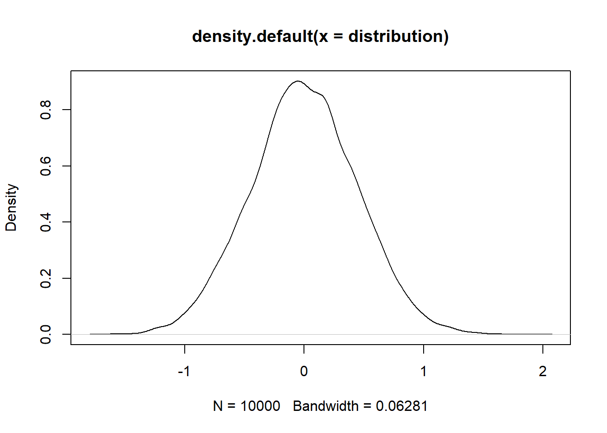
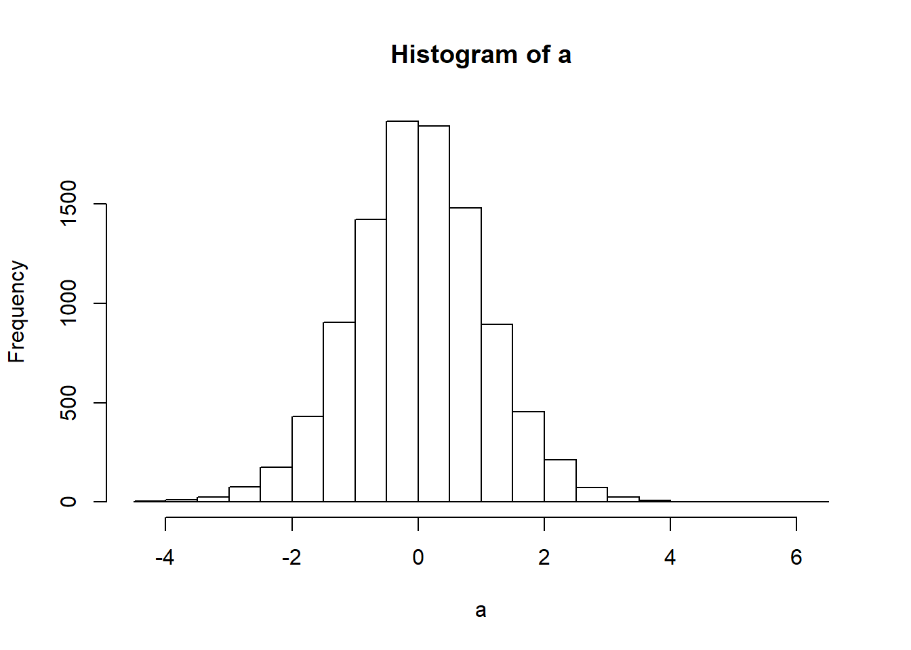
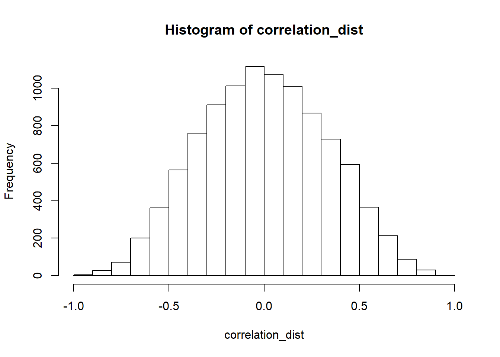
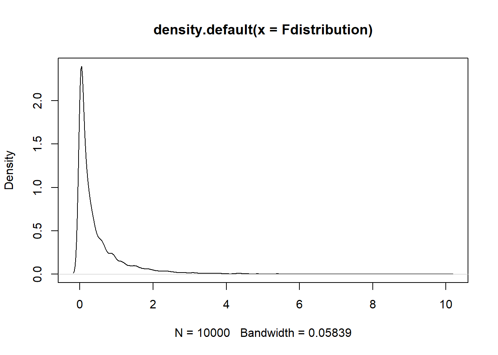

Statistics
Creating two samples that come from a normal distribution
distribution <- c()
for(i in 1:10000) {
vector_1 <- rnorm(10,0,1)
vector_2 <- rnorm(10,0,1)
distribution <- c(distribution,mean(vector_2)-mean(vector_1))
}
y <- hist(distribution)plot(density(distribution))
a <- replicate(10000,t.test(rnorm(10,0,1),rnorm(10,0,1))$p.value)
hist(a)
a <- replicate(10000,t.test(rnorm(10,0,1),rnorm(10,0,1))$statistic)
hist(a)
t <- .5
df <- 9
(1 - pt(q = abs(t), df = df))*2## [1] 0.6290713t <- 1
df <- 9
(1 - pt(q = abs(t), df = df))*2## [1] 0.3434364t <- 1.5
df <- 9
(1 - pt(q = abs(t), df = df))*2## [1] 0.1678507t <- 2
df <- 9
(1 - pt(q = abs(t), df = df))*2## [1] 0.07655282t <- 2.5
df <- 9
(1 - pt(q = abs(t), df = df))*2## [1] 0.03386183testScores <- rnorm(10, mean = 0, sd = 1)
t.test(testScores,mu=0)##
## One Sample t-test
##
## data: testScores
## t = 0.071758, df = 9, p-value = 0.9444
## alternative hypothesis: true mean is not equal to 0
## 95 percent confidence interval:
## -0.7848565 0.8362805
## sample estimates:
## mean of x
## 0.025712t_dist <-runif(10000)T null distribution
T_distribution <- c()
for(i in 1:10000) {
vector_3 <- rnorm(10,0,1)
T_distribution <- c(T_distribution,(mean(vector_3)- 0)/(sd(vector_3)/(sqrt(length(vector_3)))))
}
hist(T_distribution)correlation
x <- rnorm(10,0,1)
y <- rnorm(10,0,1)
cor(x,y)## [1] -0.2177957correlation_dist <- c()
for(i in 1:10000) {
vector_1 <- rnorm(10,0,1)
vector_2 <- rnorm(10,0,1)
correlation_dist <- c(correlation_dist, cor(vector_1,vector_2))
}
hist(correlation_dist)
Critical value
zd <- density(correlation_dist)
allprobvalues <- which(zd$y >= 0.05) # possible values in this vector
abs(zd$x[allprobvalues[1]])## [1] 0.7849197F Values ANOVA
A <- c(1,2,3,4)
B <- c(3,4,5,6)
C <- c(5,6,7,8)
Subjects <- 1:4
Factor1 <- rep(rep(c("A","B","C"), each = 4), 10)
Factor2 <- rep(rep(c("1","2"), 2), 10)
meanvalue_subject <- c(A,B,C)
all_data <- data.frame(Subjects = as.factor(Subjects),
meanvalue_subject, A,B,C)
aov_output <- aov(meanvalue_subject~A*B*C, all_data)
library(xtable)## Warning: package 'xtable' was built under R version 3.5.3 knitr::kable(xtable(summary(aov_output)))| Df | Sum Sq | Mean Sq | F value | Pr(>F) | |
|---|---|---|---|---|---|
| A | 1 | 15 | 15 | 3.75 | 0.0888262 |
| A:B | 1 | 0 | 0 | 0.00 | 1.0000000 |
| A:B:C | 1 | 0 | 0 | 0.00 | 1.0000000 |
| Residuals | 8 | 32 | 4 | NA | NA |
| ## F Distrib | ution |
Subjects <- rep(1:4,3)
df1 <- 2
df2 <- 8
Fdistribution <- c()
for(i in 1:10000) {
A <- rnorm(4,0,1) # ABC is simulated data
B <- rnorm(4,0,1)
C <- rnorm(4,0,1)
mean_of_subject <- c(A,B,C) # contains all random numbers
correlation_dist2 <- (cor(Subjects,mean_of_subject))^2
Fdistribution <- c(Fdistribution, (correlation_dist2/(1-correlation_dist2))*(df2/df1))
}
plot(density(Fdistribution ))
zd <- density(Fdistribution)
allposs_values <- which(zd$y >= 0.05)
zd$x[allposs_values[length(allposs_values)]]## [1] 1.974276